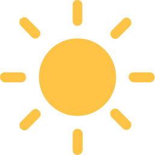
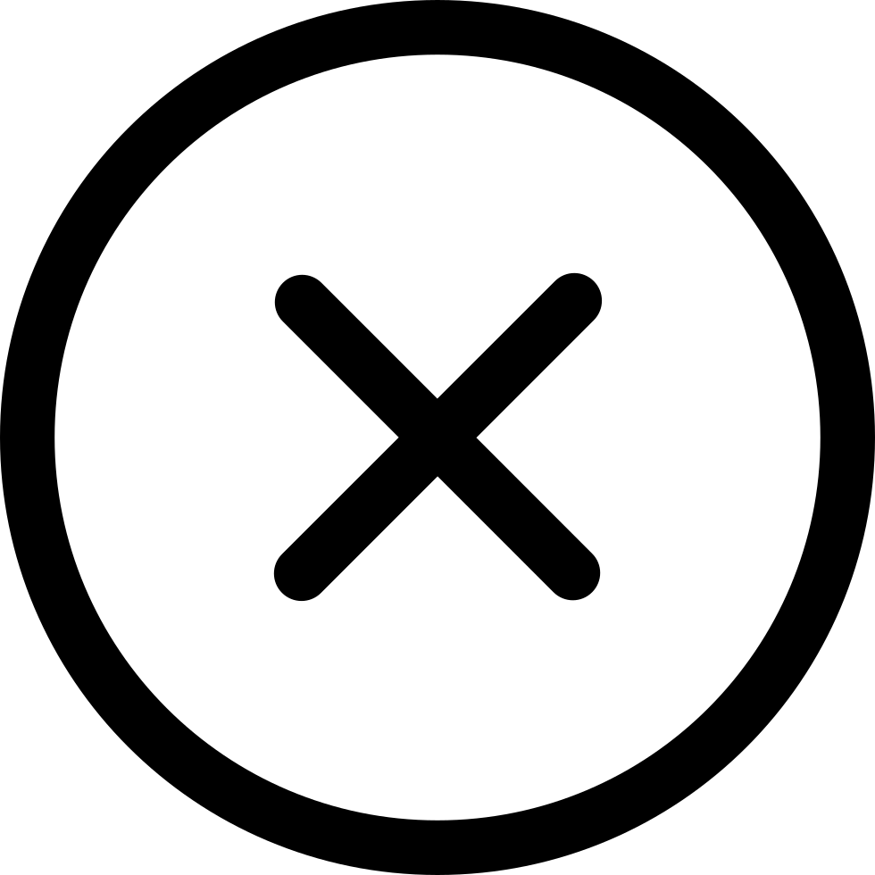

<!-- header.html -->
{% macro zytopbar() -%}
<style>
#loading {
    position: fixed;
    top: 0;
    left: 0;
    width: 100%;
    height: 100%;
    z-index: 10000;
    display: flex;
    align-items: center;
    justify-content: center;
    font-size: 24px;
}
</style>
<script>
document.addEventListener("DOMContentLoaded", function() {
    var loadingElement = document.getElementById("loading");
    loadingElement.style.display = "none";
});
</script>
<div id="loading"></div>
<div class="fixed-icon">
    <!-- 这里放置你的图标 -->
    <a href="#top"></a>
    <form id="theme-form" method="post" action="/toggle_theme">
        <br>
    <button type="submit" style="border: none; background-color: transparent; height: 28px">
      
    </button>
  </form>
    <br><br>
       <button id="wechat-button" style="border: none; background-color: transparent; height: 28px"
        onmouseover="showQRCode()"
        onmouseout="hideQRCode()">
  
</button>


<script>
  function showQRCode() {
    document.getElementById("wechat-qr-code").style.display = "block";
  }

  function hideQRCode() {
    document.getElementById("wechat-qr-code").style.display = "none";
  }
</script>

  </div>

<script>
            $(document).ready(function() {
            $("#theme-form").submit(function(event) {
                event.preventDefault();
                $.post("/toggle_theme", function(data) {
                    location.reload();  // 刷新页面，以便显示新的主题
                });
            });
        });
</script>
    <nav class="navbar navbar-expand-lg navbar-dark bg-primary">
    <div class="container" style="z-index: 10000">
        <!-- 导航栏商标 -->
        <a class="navbar-brand" href="/"></a>
        <!-- 导航入口 -->
        <ul class="navbar-nav">
            <li class="nav-item">
                <a class="nav-link" href="/travel"></a>
            </li>
            <li class="nav-item">
                    <a class="nav-link" href="/newArticle" alt="上传投稿"></a>
                </li>
            <li class="nav-item dropdown">
                <a class="nav-link dropdown-toggle" href="#" id="navbarDropdownMenuLink" role="button"
                    data-toggle="dropdown" aria-haspopup="true" aria-expanded="false">
                    其他
                </a>
                <div class="dropdown-menu" aria-labelledby="navbarDropdownMenuLink">
                    <a href="https://github.com/Athenavi/zyBLOG/" target="_blank">Github开源地址</a>
                    <a class="dropdown-item" href="/blog/privacy">隐私协议</a>
                    <a class="dropdown-item" href="/blog/legal-agreement">法律声明</a>
                    <a class="dropdown-item" href="/sitemap">站点地图</a>
                    <a class="dropdown-item" href="/feed">RSS订阅</a>
                    <div id="SideList"></div>
                </div>
            </li>

            <li class="nav-item">
                <a class="nav-link" onclick="togglePopup()" >
            </a>
            </li>
        </ul>
    </div>
</nav>
    <style>
    /* 弹出窗格的样式 */
    .popup {
        display: none; /* 初始状态下隐藏 */
        position: fixed;
        top: 50%;
        left: 50%;
        transform: translate(-50%, -50%);
        width: 900px;
        height: 600px;
        background-color: #fff;
        border: 2px solid #000;
        padding: 20px;
        z-index: 9999; /* 设置 z-index 值较大 */
    }

    /* 图片按钮的样式 */
    .image-button {
        cursor: pointer;
    }
</style>

<!-- 图片按钮 -->
<div id="popup" class="popup">
    <button id="resetBtn" class="btn btn-primary mb-2" onclick="resetIframe()">重置</button>
    
    <iframe src="/search" width="100%" height="100%"></iframe>
</div>

<script>
    function togglePopup() {
        var popup = document.getElementById("popup");
        if (popup.style.display === "none") {
            popup.style.display = "block"; // 打开窗格
        } else {
            popup.style.display = "none"; // 关闭窗格
        }
    }

    function resetIframe() {
        var iframe = document.querySelector("iframe"); // 选择第一个找到的 iframe 元素
        iframe.src = iframe.src; // 刷新 iframe 内容
    }

    document.addEventListener("keydown", function(event) {
    if (event.ctrlKey && event.key === "f") { // 监听 Ctrl+F 键盘事件
        event.preventDefault(); // 阻止默认的浏览器搜索行为
        togglePopup(); // 触发 togglePopup() 函数
    }
});

</script>

<script type="text/javascript">
  // 禁用右键菜单
  window.addEventListener('contextmenu', function (e) {
    e.preventDefault();
  }, false);
</script>

{% endmacro %}